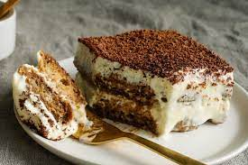

1.Spaghetti Bolognese
Ingredients
- 400g ground beef
- 1 onion, finely chopped
- 2 cloves garlic, minced
- 1 carrot, grated
- 1 celery stalk, finely chopped
- 400g canned crushed tomatoes
- 200ml red wine
- 2 tbsp tomato paste
- 1 tsp dried oregano
- Salt and pepper to taste
- 400g spaghetti
- Freshly grated Parmesan for serving
Cooking Instructions
- Step 1: In a large pan, brown the ground beef over medium heat.
- Step 2: Add onions, garlic, carrot, and celery. Sauté until vegetables are tender.
- Step 3: Pour in red wine and cook until it reduces by half.
- Step 4: Stir in crushed tomatoes, tomato paste, oregano, salt, and pepper. Simmer for 30-40 minutes.
- Step 5: Cook spaghetti according to package instructions. Drain.
- Step 6: Serve Bolognese sauce over spaghetti. Garnish with Parmesan.
2.Margherita Pizza
Ingredients
- Pizza dough
- 1 cup tomato sauce
- Fresh mozzarella, sliced
- Fresh basil leaves
- Olive oil
- Salt and pepper to taste
Cooking Instructions
- Step 1: Preheat oven to 475°F (245°C)
- Step 2: Roll out pizza dough on a floured surface
- Step 3: Spread tomato sauce evenly over the dough.
- Step 4: Arrange mozzarella slices on top. Add fresh basil leaves
- Step 5: Drizzle olive oil over the pizza and season with salt and pepper.
- Step 6: Bake in the preheated oven for 12-15 minutes or until crust is golden
3.Risotto ai Funghi (Mushroom Risotto)
Ingredients
- 1 1/2 cups Arborio rice
- 1/2 cup dry white wine
- 4 cups chicken or vegetable broth, warm
- 1 cup mushrooms, sliced
- 1 onion, finely chopped
- 2 cloves garlic, minced
- 1/2 cup Parmesan cheese, grated
- 2 tbsp butter
- Salt and pepper to taste
Cooking Instructions
- Step 1: In a pan, sauté onions and garlic in butter until softened.
- Step 2: Add mushrooms and cook until browned.
- Step 2: Stir in Arborio rice and cook for 2 minutes.
- Step 2: Pour in wine and cook until it evaporates.
- Step 2: Begin adding warm broth one ladle at a time, stirring until absorbed
- Step 2: Continue adding broth until rice is creamy and cooked al dente.
- Step 2: Stir in Parmesan cheese. Season with salt and pepper
4.Tiramisu

Ingredients
- 6 egg yolks
- 3/4 cup granulated sugar
- 1 cup mascarpone cheese
- 1 1/2 cups strong brewed coffee, cooled
- 1/4 cup coffee liqueur
- 24-30 ladyfinger cookies
- Cocoa powder for dusting
Cooking Instructions
- Step 1: In a bowl, whisk egg yolks and sugar until thick and pale.
- Step 2: Add mascarpone cheese and mix until smooth
- Step 3: In a shallow dish, combine coffee and coffee liqueur.
- Step 4: Dip ladyfingers into the coffee mixture and arrange a layer in a serving dish
- Step 5: Spread half of the mascarpone mixture over the ladyfingers.
- Step 6: Repeat with another layer of dipped ladyfingers and the remaining mascarpone mixture.
- Step 7: Refrigerate for at least 4 hours. Dust with cocoa powder before serving.